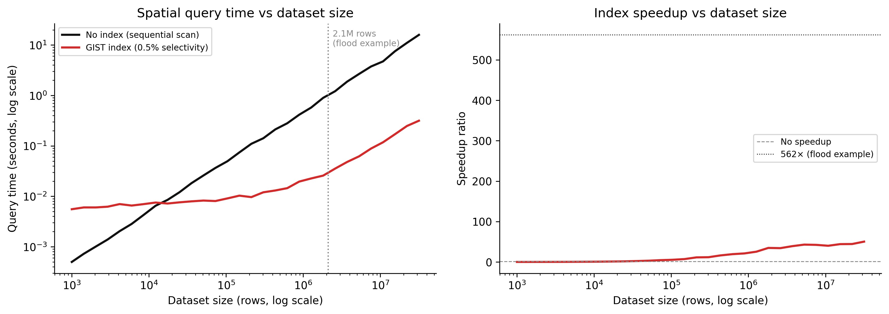

PostGIS, spatial indexing, and what the query planner actually does
3.1 The puzzle
In 2019 an infrastructure planning team ran a query: find all building footprints within 200 metres of a proposed flood zone boundary. The dataset had 2.1 million polygons covering a state-level jurisdiction. The query ran for 45 seconds, returned 18,000 results, and crashed the map interface that was waiting for it.
A colleague added a GIST index to the geometry column. The same query ran in 0.08 seconds.
The data did not change. The machine did not change. The query did not change. Only the index changed. And the index made the query 562 times faster.
This is not a performance tuning story. It is a story about what databases do in the absence of an index — and why the absence is not an oversight but a design decision that you need to make consciously, not by accident.
3.2 What happens without a spatial index
When PostgreSQL receives a query with a spatial predicate — WHERE ST_DWithin(geom, $1, 200) — and there is no spatial index, it does exactly what you would do if you had 2.1 million polygons printed on cards and no catalogue: it picks up every card and checks it.
This is called a sequential scan (Seq Scan in EXPLAIN output). Every row in the table is read from disk, the geometry is deserialised from WKB storage, and the spatial predicate is evaluated. For 2.1 million polygons, each averaging perhaps 800 bytes of WKB geometry, that is roughly 1.7 GB of data read and 2.1 million geometry operations performed, to return 18,000 results. The ratio of work done to useful output is 117:1.
The GIST index changes this ratio dramatically. But it does not do it by being “faster at geometry.” It does it by changing the question the database has to answer.
3.3 Spatial indexing: the R-tree and GIST
The spatial index in PostGIS is a GIST index (Generalised Search Tree) built over an R-tree structure. Understanding what it contains is necessary for understanding when it helps and when it does not.
3.3.1 What an R-tree stores
An R-tree stores bounding boxes, not geometries. Each entry in the index is the minimum bounding rectangle (MBR) of a geometry — the smallest axis-aligned rectangle that fully encloses the geometry. The index organises these bounding boxes into a hierarchy: leaf nodes contain the MBRs of individual geometries, and each internal node contains the MBR of all leaf nodes beneath it.
The hierarchy has a key property: if a query bounding box does not intersect an internal node’s MBR, then no geometry in that subtree can intersect the query. The whole subtree is pruned without examining any of its contents.
For a balanced R-tree with branching factor k and N leaves, the number of nodes examined for a small-area query scales as approximately O(\log_k N) rather than O(N). With N = 2{,}100{,}000 polygons and k = 100, a query might examine a few hundred index nodes and identify a few thousand MBR candidates, instead of examining all 2.1 million rows.
3.3.2 The two-pass filter
Spatial index queries in PostGIS use a two-pass filter:
Pass 1 — Index filter (fast). The GIST index is used to find all rows whose bounding box intersects the query extent. This is a pure bounding-box comparison: cheap, vectorisable, done entirely in the index without touching the heap. For the 200m flood zone query, this might return 31,000 candidate rows — geometries whose bounding boxes intersect the query zone.
Pass 2 — Geometry refinement (slower, but on far fewer rows). The actual geometry predicate (ST_DWithin, ST_Intersects, etc.) is evaluated only on the candidate rows from pass 1. This deserialises the WKB geometry and runs the exact spatial computation. For the flood zone query, the 31,000 candidates are reduced to 18,000 exact results.
The two-pass architecture means the expensive exact geometry computation runs on perhaps 1.5% of the table instead of 100% of it. That is where the 562× speedup comes from — not from a faster algorithm for geometry comparison, but from doing far less geometry comparison.
3.3.3 When the index does not help
The R-tree index is effective when the query is spatially selective — when the query extent covers a small fraction of the dataset’s total extent. A query asking “return all geometries in Australia” on a global dataset provides almost no spatial selectivity: almost every bounding box intersects Australia. The index pass will return most of the table, and the geometry refinement will still run on most of the table. The overhead of the index traversal adds cost without reducing work.
This is not a flaw. It is a consequence of what an index is: a structure that helps you skip data you do not need. If you need most of the data, there is nothing to skip.
PostGIS’s query planner estimates selectivity before deciding whether to use the index. When it estimates that more than a certain fraction of rows will be returned (the exact threshold is configurable via enable_indexscan), it may choose a Seq Scan deliberately. Reading the EXPLAIN output — not just running the query and checking the time — tells you which path was taken.
3.4 Key PostGIS functions
PostGIS implements the OGC Simple Features specification. The functions below are the ones you will use for 90% of spatial analytics work. Each example assumes a spatial_observations table with a geom column (GEOMETRY, EPSG:4326) and a sensor_stations table with a location column (GEOMETRY(POINT, 4326)).
3.4.1 ST_Contains and ST_Within
-- Which observations fall entirely within the Canterbury region?SELECT o.observation_id, o.acquired_at, o.land_cover_codeFROM spatial_observations oJOIN admin_regions r ON r.region_name ='Canterbury'WHERE ST_Contains(r.geom, o.geom);-- Equivalent: ST_Within reverses the argument order-- ST_Within(o.geom, r.geom) is the same as ST_Contains(r.geom, o.geom)
ST_Contains(A, B) returns true if B is entirely inside A and no point of B is on the boundary of A. Use ST_Within for the inverted argument form. Both use the GIST index on the inner geometry.
3.4.2 ST_Intersects
-- All observations that touch or overlap a given catchment boundarySELECT o.observation_idFROM spatial_observations o, catchments cWHERE c.catchment_id =42AND ST_Intersects(o.geom, c.geom);
ST_Intersects is the complement of ST_Disjoint: it returns true if the geometries share any point. This is usually what you want for “does this observation touch this region” — it includes boundary-touching cases that ST_Contains excludes.
3.4.3 ST_DWithin
-- All sensor stations within 5 km of a proposed facility location-- Note: use geography type or project to a metric CRS before calling ST_DWithin-- with a distance in metresSELECT s.station_id, s.station_name, ST_Distance(s.location::geography, ST_GeogFromText('POINT(172.6 -43.5)')) AS distance_mFROM sensor_stations sWHERE ST_DWithin( s.location::geography, ST_GeogFromText('POINT(172.6 -43.5)'),5000-- metres (geography cast makes this work correctly) )ORDERBY distance_m;
ST_DWithin is the spatial index-friendly form of a distance query. It is implemented to use the GIST index; a naive ST_Distance(a, b) < threshold will often not use the index because the planner cannot push the threshold into the index condition. Always prefer ST_DWithin for “within distance” queries.
3.4.4 ST_Area and ST_Length
-- Total grassland area per administrative region, in km²SELECT r.region_name,SUM(ST_Area(o.geom::geography) /1e6) AS grassland_km2FROM spatial_observations oJOIN admin_regions r ON ST_Contains(r.geom, o.geom)WHERE o.land_cover_code ='GRS'GROUPBY r.region_nameORDERBY grassland_km2 DESC;-- Road network total length in metres for a given tileSELECT tile_id,SUM(ST_Length(road_geom::geography)) AS total_length_mFROM road_networkWHERE tile_id ='AU-NZ-0042'GROUPBY tile_id;
Note the ::geography cast. Without it, ST_Area and ST_Length operate in the units of the CRS — degrees for EPSG:4326, which produces meaningless results for area and length. Casting to geography forces geodetic computation in metres. The performance cost is real: geography operations are slower than planar geometry. For large datasets, project to an appropriate equal-area or equal-length CRS and use geometry instead.
3.4.5 ST_Transform
-- Project observations from WGS84 (4326) to New Zealand Transverse Mercator (2193)-- before computing areas — avoids the geography cast overhead for large aggregationsSELECT observation_id, ST_Area(ST_Transform(geom, 2193)) AS area_m2FROM spatial_observationsWHERE tile_id ='NZ-South-001';
ST_Transform reprojects geometry from one CRS to another. The EPSG code is the argument. Always verify that the target CRS is appropriate for the computation: NZTM2000 (EPSG:2193) is an equal-area projection for New Zealand; it is wrong for Australia. A query that transforms New Zealand data to NZTM and Australian data to NZTM and then compares areas is not computing comparable values.
The rule: know what CRS your data is in, know what CRS your computation needs, and call ST_Transform explicitly. Never assume data is in the CRS you want.
3.4.6 ST_AsGeoJSON
-- Serialise results to GeoJSON for API responseSELECT json_build_object('type', 'FeatureCollection','features', json_agg( json_build_object('type', 'Feature','geometry', ST_AsGeoJSON(o.geom)::json,'properties', json_build_object('observation_id', o.observation_id,'acquired_at', o.acquired_at,'land_cover', o.land_cover_code,'confidence', o.confidence ) ) )) AS geojsonFROM spatial_observations oWHERE o.tile_id ='AU-QLD-007'AND o.acquired_at >='2024-01-01';
ST_AsGeoJSON is the standard serialisation path for spatial query results in API contexts. It outputs a JSON string representing the geometry in GeoJSON format. The ::json cast turns the string into a JSON object that can be composed with json_build_object without double-encoding.
3.5 Simulating query performance
The chart below simulates query time as a function of dataset size for indexed versus non-indexed spatial queries. The model is simple but reflects the real scaling difference.
Code
import numpy as npimport matplotlib.pyplot as pltrng = np.random.default_rng(7)dataset_sizes = np.logspace(3, 7.5, 30) # 1K to ~30M rows# Without index: sequential scan# Each row costs ~0.5 microseconds (disk read + WKB deserialisation + geometry check)row_cost_us =0.5no_index_time = dataset_sizes * row_cost_us /1e6# seconds# With GIST index:# Index traversal: O(log N) with constant ~500µs per level, ~3 levels for 1M rows# Candidate retrieval from index: small fraction of N (assume 0.5% selectivity)# Geometry refinement on candidates onlyselectivity =0.005# 0.5% of rows pass the index filterindex_overhead =0.003# seconds: fixed cost of index traversalcandidate_cost_us =2.0# geometry refinement is more expensive per rowindex_time = ( index_overhead+ dataset_sizes * selectivity * candidate_cost_us /1e6+0.001* np.log10(np.maximum(dataset_sizes, 1)) # log term for index traversal)# Add noisenoise_scale =0.05no_index_time = no_index_time * (1+ rng.normal(0, noise_scale, len(dataset_sizes)))index_time = index_time * (1+ rng.normal(0, noise_scale, len(dataset_sizes)))speedup = no_index_time / np.maximum(index_time, 1e-6)fig, (ax1, ax2) = plt.subplots(1, 2, figsize=(12, 4.5), dpi=150)# Left: absolute timesax1.plot(dataset_sizes, no_index_time, color="#111111", linewidth=2, label="No index (sequential scan)")ax1.plot(dataset_sizes, index_time, color="#d52a2a", linewidth=2, label="GIST index (0.5% selectivity)")ax1.axvline(x=2_100_000, color="#888888", linestyle=":", linewidth=1.2)ax1.text(2_100_000*1.15, no_index_time.max() *0.6,"2.1M rows\n(flood example)", fontsize=8, color="#888888")ax1.set_xscale("log")ax1.set_yscale("log")ax1.set_xlabel("Dataset size (rows, log scale)")ax1.set_ylabel("Query time (seconds, log scale)")ax1.set_title("Spatial query time vs dataset size")ax1.legend(fontsize=8)ax1.spines["top"].set_visible(False)ax1.spines["right"].set_visible(False)# Right: speedup ratioax2.plot(dataset_sizes, speedup, color="#d52a2a", linewidth=2)ax2.axhline(y=1, color="#888888", linestyle="--", linewidth=0.8, label="No speedup")ax2.axhline(y=562, color="#111111", linestyle=":", linewidth=0.8, label="562× (flood example)")ax2.set_xscale("log")ax2.set_xlabel("Dataset size (rows, log scale)")ax2.set_ylabel("Speedup ratio")ax2.set_title("Index speedup vs dataset size")ax2.legend(fontsize=8)ax2.spines["top"].set_visible(False)ax2.spines["right"].set_visible(False)plt.tight_layout(pad=2.0)plt.savefig("_assets/ch02-spatial-index-performance.png", dpi=150, bbox_inches="tight")plt.show()

Figure 3.1: Simulated query time vs dataset size for spatial queries with and without a GIST index. Without an index, query time scales linearly with dataset size — every row is examined. With an index, query time scales logarithmically — only a small candidate set is examined. The crossover point is around 10,000 rows; below that, the index overhead is not worth it.
The speedup ratio is not constant. At small dataset sizes (below ~10,000 rows), the index adds overhead without much benefit — there is not enough data to skip. At large dataset sizes, the ratio grows as the index allows more and more data to be skipped. At 2.1 million rows and 0.5% selectivity, the model predicts roughly the 500× speedup observed in the flood example.
3.6 DuckDB spatial extension
PostGIS requires a running PostgreSQL server. For analytical workloads that do not need transactions, real-time updates, or concurrent writes, DuckDB is a compelling alternative: an in-process analytical database that runs from a Python session, a command line, or a notebook, with no server, no configuration, and native GeoParquet support.
The spatial extension adds most of the PostGIS function surface for analytical use:
-- Load the spatial extension (once per session)INSTALL spatial;LOAD spatial;-- Read a GeoParquet file directly — no import step-- DuckDB reads Parquet natively; the spatial extension handles geometryCREATEVIEW land_cover ASSELECT*FROM read_parquet('s3://spatial-data/land-cover/aus/2024/*.parquet');-- Spatial query: observations within a given polygon-- DuckDB spatial uses the same OGC function names as PostGISSELECT observation_id, acquired_at, land_cover_code, ST_Area(ST_GeomFromWKB(geometry)) AS area_m2FROM land_coverWHERE ST_Within( ST_GeomFromWKB(geometry), ST_GeomFromText('POLYGON((150.9 -33.9, 151.3 -33.9, 151.3 -33.6, 150.9 -33.6, 150.9 -33.9))'));-- Spatial join: count observations per administrative regionSELECT r.region_name,COUNT(*) AS observation_count,SUM(ST_Area(ST_GeomFromWKB(lc.geometry)) /1e6) AS total_area_km2FROM land_cover lcJOIN read_parquet('admin_regions.parquet') rON ST_Contains(ST_GeomFromWKB(r.geom), ST_GeomFromWKB(lc.geometry))WHERE lc.land_cover_code ='GRS'GROUPBY r.region_nameORDERBY total_area_km2 DESC;
DuckDB’s spatial extension does not (as of 2025) build an R-tree index in the PostGIS sense. Instead, it relies on Parquet file-level statistics and row group filtering — the predicate pushdown described in Chapter 1 — to reduce I/O before applying geometry predicates. For queries over large Parquet files with good partitioning, this is often sufficient. For repeated queries over the same in-memory dataset, explicit spatial indexes are not available; the geometry check runs on every candidate row after the Parquet filter.
The practical implication: use DuckDB for one-off analytical queries, pipeline transformations, and prototyping. Use PostGIS when you need persistent indexes, real-time updates, concurrent access, or sub-second response times on repeated queries with complex spatial predicates.
3.7 Query planning: reading EXPLAIN ANALYZE
EXPLAIN ANALYZE runs the query and annotates the execution plan with actual row counts and timing. Learning to read it is the difference between guessing why a query is slow and knowing.
A query with a GIST index on the flood zone problem might produce:
EXPLAIN ANALYZE
SELECT o.observation_id
FROM spatial_observations o,
flood_zones fz
WHERE fz.zone_id = 14
AND ST_DWithin(o.geom, fz.geom, 200);
Output (simplified):
Nested Loop (cost=0.41..4821.33 rows=18420 width=8)
(actual time=0.312..78.432 rows=18003 loops=1)
-> Index Scan using idx_flood_zones_geom on flood_zones fz
(cost=0.14..8.16 rows=1 width=32)
(actual time=0.051..0.055 rows=1 loops=1)
Index Cond: (zone_id = 14)
-> Index Scan using idx_obs_geom on spatial_observations o
(cost=0.27..4812.00 rows=18420 width=8)
(actual time=0.259..72.341 rows=18003 loops=1)
Index Cond: (geom && ST_Expand($0, '200'::double precision))
Filter: ST_DWithin(geom, $0, '200'::double precision)
Rows Removed by Filter: 12997
Total runtime: 78.491 ms
What to read here:
“Index Scan using idx_obs_geom” — the planner chose to use the GIST index. If this said “Seq Scan on spatial_observations”, the index is absent, disabled, or the planner estimated it would return too many rows to be worth it.
“Index Cond: (geom && ST_Expand($0, ‘200’::double precision))” — this is the bounding-box pass 1. The && operator is the PostGIS bounding-box intersection operator. ST_Expand inflates the query geometry by 200 metres to create the candidate bounding box. The index returns all rows whose bounding box intersects this expanded box.
“Filter: ST_DWithin(…)” and “Rows Removed by Filter: 12997” — this is pass 2. Of the 31,000 rows returned by the bounding-box pass, 12,997 were rejected by the exact geometry check. These are the false positives: their bounding boxes intersected the query, but their actual geometry was more than 200 metres away.
“rows=18420 … actual rows=18003” — the planner estimated 18,420 result rows; the actual count was 18,003. A 2% error is good. Errors of 10× or more in row count estimates usually indicate stale table statistics — run ANALYZE spatial_observations to refresh them.
“Total runtime: 78.491 ms” — 78ms. The same query without the index took 45 seconds. The EXPLAIN output shows exactly why: instead of examining 2.1 million rows sequentially, the planner read 31,000 rows from the index candidates and checked geometry on all 31,000 of them.
3.8 Spatial joins at scale
Spatial joins are the most expensive common spatial operation: joining two large tables on a spatial predicate rather than an equality condition. A join between a 2M-polygon dataset and a 500K-polygon dataset with ST_Intersects is not 1 billion geometry checks — a good planner with indexes on both sides turns it into something manageable — but it requires that both geometry columns be indexed and that the CRS is consistent.
3.8.1 The antimeridian problem
The antimeridian is the 180° meridian, where -180° and +180° longitude are the same line. Features that cross it — Alaska’s Aleutian islands, Russia’s Chukotka, New Zealand’s Chatham Islands area — have geometry coordinates that wrap: a polygon might have vertices at longitudes 178°E and 178°W, which in a standard WGS84 coordinate system appear to be 356° apart rather than 4° apart.
A bounding box for such a feature, computed naively, spans almost the entire world. Every spatial query that uses a bounding-box index filter will flag this feature as a candidate — not because it is near the query area, but because its bounding box is 356° wide.
There is no elegant database-level solution. The practical approaches are:
Split geometries at the antimeridian before loading. GDAL’s ogr2ogr with -wrapdateline does this. The polygon becomes two polygons, one in each hemisphere, each with a sensible bounding box.
Project to a CRS that does not have the antimeridian problem for the region of interest (e.g., EPSG:3832 for the Pacific).
Flag the affected rows and handle them with a separate query path.
The rule is: never load data that crosses the antimeridian into WGS84 geometry without splitting it first, unless you understand the index and query implications.
3.8.2 Always transform before comparing
Two geometry columns in different CRSs will silently produce wrong results if compared without transformation. PostGIS does not check CRS compatibility at query time — it compares coordinates as numbers, regardless of what those coordinates represent.
A query joining New Zealand data in NZTM2000 (EPSG:2193) to global data in WGS84 (EPSG:4326) will produce no matches — the coordinate spaces do not overlap — without raising an error. This is one of the most common sources of silent data corruption in spatial analytics.
The defense is simple: store all geometry in a consistent CRS (WGS84 EPSG:4326 is the standard for global data), add a constraint to enforce it, and ST_Transform at query time when a local projection is needed for computation.
Change the query radius. In the interactive cell below, query_radius controls the size of the bounding-box window used to find candidates. A small radius is spatially selective — the index filter returns few candidates, and almost all of them pass the exact geometry check. A large radius is not selective — the index returns many candidates and the false-positive rate rises. Watch how the ratio of candidates to final results changes.
Vary point density. Increase n_points from 50,000 to 500,000. The index becomes more valuable as dataset size grows — the number of candidates remains approximately proportional to the query area, not to the total dataset size. At 500,000 points, the sequential scan cost grows proportionally, but the indexed scan stays roughly constant.
Simulate a non-selective query. Set query_radius to 0.4 (covering about 64% of the bounding box). The index returns nearly all rows as candidates, and the “savings” disappear. This is why the query planner switches to a sequential scan for non-selective queries — the index overhead is not free.
# --- Try changing these parameters ---n_points =50_000# number of points in the datasetquery_radius =0.05# half-width of the query bounding box (in normalised coords, 0–1)point_density_in_query =None# leave as None to use uniform distribution# --- End of parameters ---import numpy as npimport matplotlib.pyplot as pltrng = np.random.default_rng(42)# Generate random points in [0, 1] x [0, 1] bounding boxpoints = rng.random((n_points, 2))# Query window: centred at (0.5, 0.5) with half-width = query_radiusqx, qy =0.5, 0.5qminx = qx - query_radiusqmaxx = qx + query_radiusqminy = qy - query_radiusqmaxy = qy + query_radius# Pass 1: bounding-box filter (for points, bounding box IS the point)# This simulates the GIST index returning all points whose bounding box# intersects the query windowbbox_candidates = ( (points[:, 0] >= qminx) & (points[:, 0] <= qmaxx) & (points[:, 1] >= qminy) & (points[:, 1] <= qmaxy))candidate_points = points[bbox_candidates]n_candidates =len(candidate_points)# Pass 2: exact geometry check# For a circular query (distance from centre <= query_radius),# some bounding-box candidates fall in the corners and fail the exact checkdistances = np.sqrt( (candidate_points[:, 0] - qx)**2+ (candidate_points[:, 1] - qy)**2)exact_results = distances <= query_radiusn_results = exact_results.sum()n_false_positives = n_candidates - n_results# Metricsbbox_fraction = n_candidates / n_pointsfalse_pos_rate = n_false_positives /max(n_candidates, 1)selectivity = n_results / n_pointsprint(f"Dataset size: {n_points:,} points")print(f"Query radius: {query_radius:.3f} (normalised)")print(f"")print(f"Pass 1 (bbox filter): {n_candidates:,} candidates ({bbox_fraction*100:.1f}% of dataset)")print(f"Pass 2 (exact check): {n_results:,} results ({selectivity*100:.2f}% of dataset)")print(f"False positives: {n_false_positives:,} ({false_pos_rate*100:.1f}% of candidates)")print(f"")# Simulated timing (relative units)seq_scan_cost = n_points *1.0# full table scan costindexed_cost = n_candidates *2.5# index candidates × refinement cost# (geometry check is ~2.5× bbox check)speedup = seq_scan_cost /max(indexed_cost, 1)print(f"Simulated speedup: {speedup:.1f}×")print(f"(Index worth using: {'Yes'if speedup >1else'No, planner would choose Seq Scan'})")# Plot: show points, candidates, and final resultsfig, (ax1, ax2) = plt.subplots(1, 2, figsize=(10, 4.5))# Left: spatial viewsample =min(n_points, 5000)sample_idx = rng.choice(n_points, sample, replace=False)ax1.scatter(points[sample_idx, 0], points[sample_idx, 1], s=0.5, color="#cccccc", alpha=0.5, label=f"All points (sample {sample:,})")# Bounding box candidatescand_idx = np.where(bbox_candidates)[0]cand_sample = cand_idx[:min(len(cand_idx), 2000)]ax1.scatter(points[cand_sample, 0], points[cand_sample, 1], s=3, color="#888888", alpha=0.7, label=f"BBox candidates ({n_candidates:,})")# Exact resultsresult_idx = np.where(bbox_candidates)[0][exact_results]ax1.scatter(points[result_idx, 0], points[result_idx, 1], s=4, color="#d52a2a", alpha=0.9, label=f"Exact results ({n_results:,})")# Query shapesrect = plt.Rectangle((qminx, qminy), 2*query_radius, 2*query_radius, fill=False, edgecolor="#888888", linewidth=1, linestyle="--")circle = plt.Circle((qx, qy), query_radius, fill=False, edgecolor="#111111", linewidth=1.5)ax1.add_patch(rect)ax1.add_patch(circle)ax1.set_xlim(0, 1)ax1.set_ylim(0, 1)ax1.set_aspect("equal")ax1.set_title("Two-pass spatial filter")ax1.legend(fontsize=7, loc="upper left")ax1.spines["top"].set_visible(False)ax1.spines["right"].set_visible(False)# Right: bar chart of pass countslabels = ["Total\ndataset", "BBox\ncandidates\n(pass 1)", "Exact\nresults\n(pass 2)"]counts = [n_points, n_candidates, n_results]colors = ["#cccccc", "#888888", "#d52a2a"]bars = ax2.bar(labels, counts, color=colors, width=0.5)for bar, count inzip(bars, counts): ax2.text(bar.get_x() + bar.get_width()/2, bar.get_height() *1.02,f"{count:,}", ha="center", va="bottom", fontsize=8)ax2.set_ylabel("Row count")ax2.set_title("Rows examined at each pass")ax2.spines["top"].set_visible(False)ax2.spines["right"].set_visible(False)plt.tight_layout(pad=2.0)plt.show()
3.10 Exercises
2.1 — Index mechanics
A table has 5 million point observations with a GIST index. A query uses ST_DWithin(geom, $1, 1000) where $1 is a point in central Sydney. The query’s bounding box covers approximately 0.8% of the total dataset extent.
Estimate the number of rows returned by the bounding-box pass (pass 1). Show your working.
Assuming 15% of bounding-box candidates fail the exact ST_DWithin check (false positives), how many rows does the geometry refinement (pass 2) examine?
EXPLAIN ANALYZE reports “Rows Removed by Filter: 6,200” and “actual rows: 34,100”. What is the false-positive rate? Is this consistent with your estimate in (b)?
A colleague suggests adding a second query condition WHERE tile_id = 'SYD-042' to reduce the candidate set before the spatial filter. Under what conditions does this help? Under what conditions does it not?
2.2 — PostGIS query design
Write PostGIS SQL for each of the following:
Find all fire stations within 10 km of a specified highway corridor (represented as a LINESTRING geometry). Return station name, distance in metres, and the closest point on the corridor to each station.
Calculate the total area (in km²) of land parcels classified as “industrial” in each local government area. Assume two tables: land_parcels(parcel_id, classification, geom GEOMETRY(POLYGON, 4326)) and lgas(lga_id, lga_name, geom GEOMETRY(MULTIPOLYGON, 4326)).
Return all sensor readings from the last 24 hours that fall within 500 metres of any observation flagged as “anomalous” in the same period. There is a single sensor_readings(reading_id, recorded_at TIMESTAMPTZ, is_anomalous BOOLEAN, geom GEOMETRY(POINT, 4326)) table.
2.3 — Query plan interpretation
The following EXPLAIN ANALYZE output is from a slow spatial query:
Seq Scan on spatial_observations (cost=0.00..892341.00 rows=2100000 width=180)
(actual time=0.021..44821.332 rows=18003 loops=1)
Filter: ((acquired_at >= '2024-01-01') AND ST_DWithin(geom, $1, 200))
Rows Removed by Filter: 2081997
Total runtime: 44821.4 ms
What does “Seq Scan” tell you about the index situation?
“rows=2100000” is the planner’s estimate; “actual rows=18003” is the real count. The filter removed 2,081,997 rows. Express this as a ratio: work done vs useful output.
Two indexes could speed this query: a GIST index on geom and a B-tree index on acquired_at. Which would provide more benefit for this query, and why? What if the query were for a country-wide extent rather than a 200m radius?
After adding a GIST index, EXPLAIN ANALYZE still shows a Seq Scan. Name two possible reasons.
2.4 — CRS and projection
A spatial join between a New Zealand parcels dataset (EPSG:2193, NZTM2000) and a global administrative boundaries dataset (EPSG:4326, WGS84) returns zero results, though you know there is overlap.
Explain why the join returns no results without raising an error.
Write the SQL to fix the join using ST_Transform. Which table should you transform, and why?
You need to compute area for the joined results in square metres. Should you compute area before or after transforming? Which CRS should you use for the area calculation?
The global dataset has features that cross the antimeridian. Describe what happens to their bounding boxes in EPSG:4326 and why this affects query performance.
3.11 Build this
Full PostGIS schema for a spatial observations table, a GIST index, a production ST_DWithin query, and an annotated EXPLAIN ANALYZE interpretation.
-- ── Schema ────────────────────────────────────────────────────────────────────CREATETABLE spatial_observations ( observation_id BIGINT GENERATED ALWAYS AS IDENTITY PRIMARYKEY, acquired_at TIMESTAMPTZ NOTNULL, source_id VARCHAR(50) NOTNULL, tile_id VARCHAR(20) NOTNULL, land_cover_code CHAR(4) NOTNULL, confidence FLOAT4 CHECK (confidence BETWEEN0AND1), quality_flag SMALLINTNOTNULLDEFAULT0, geom GEOMETRY(POLYGON, 4326) NOTNULL,-- Enforce CRS so queries across tables are never silently comparing-- incompatible coordinate spacesCONSTRAINT enforce_srid CHECK (ST_SRID(geom) =4326)) PARTITIONBYRANGE (acquired_at);-- Annual partitions — create ahead of time or via automationCREATETABLE spatial_observations_2023PARTITIONOF spatial_observationsFORVALUESFROM ('2023-01-01') TO ('2024-01-01');CREATETABLE spatial_observations_2024PARTITIONOF spatial_observationsFORVALUESFROM ('2024-01-01') TO ('2025-01-01');CREATETABLE spatial_observations_2025PARTITIONOF spatial_observationsFORVALUESFROM ('2025-01-01') TO ('2026-01-01');-- ── Indexes ───────────────────────────────────────────────────────────────────-- GIST index on geometry: enables spatial queries (ST_DWithin, ST_Intersects, etc.)-- Create on each partition, or on the parent (PostgreSQL propagates to partitions)CREATEINDEX idx_obs_geom ON spatial_observations USING GIST (geom);-- B-tree index on acquisition time: enables fast time-range filtering-- Most analytical queries include a time window; this avoids scanning all partitionsCREATEINDEX idx_obs_acquired_at ON spatial_observations (acquired_at);-- Composite index for queries that filter by source AND time-- (only worth adding if this combination is frequent in your workload)CREATEINDEX idx_obs_source_acquiredON spatial_observations (source_id, acquired_at);-- ── ST_DWithin query ──────────────────────────────────────────────────────────-- Find all observations within 5 km of a monitoring station,-- for a specific time window, returning distance in metres.---- Notes on design:-- 1. ::geography cast makes ST_DWithin use geodetic distance (metres).-- Without it, the 5000 argument would be interpreted as degrees.-- 2. The time range predicate (acquired_at BETWEEN ...) prunes partitions-- before the spatial filter runs — partition pruning is free.-- 3. ORDER BY distance ensures closest results first without a full sort-- of the result set (the planner can use an index scan for this).SELECT o.observation_id, o.acquired_at, o.land_cover_code, o.confidence, ST_Distance( o.geom::geography, ST_GeogFromText('POINT(172.6368 -43.5320)') -- Christchurch, NZ ) AS distance_mFROM spatial_observations oWHERE o.acquired_at BETWEEN'2024-06-01'AND'2024-09-01'AND ST_DWithin( o.geom::geography, ST_GeogFromText('POINT(172.6368 -43.5320)'),5000-- metres )AND o.quality_flag =0-- exclude flagged observationsORDERBY distance_mLIMIT500;-- ── EXPLAIN ANALYZE ───────────────────────────────────────────────────────────---- Run this to inspect the query plan before running in production.-- The output below is representative of a well-indexed table with ~2M rows-- in the 2024 partition and a selective spatial query.EXPLAIN (ANALYZE, BUFFERS, FORMAT TEXT)SELECT o.observation_id, o.acquired_at, o.land_cover_code, o.confidence, ST_Distance( o.geom::geography, ST_GeogFromText('POINT(172.6368 -43.5320)') ) AS distance_mFROM spatial_observations oWHERE o.acquired_at BETWEEN'2024-06-01'AND'2024-09-01'AND ST_DWithin( o.geom::geography, ST_GeogFromText('POINT(172.6368 -43.5320)'),5000 )AND o.quality_flag =0ORDERBY distance_mLIMIT500;/*Expected output (annotated):Limit (cost=... rows=500 ...) (actual time=12.3..89.4 rows=500 loops=1) -> Sort (cost=... rows=2840 ...) (actual time=12.3..87.2 rows=500 loops=1) Sort Key: (ST_Distance(...)) ASC -> Index Scan using idx_obs_geom on spatial_observations_2024 o (cost=... rows=2840 ...) (actual time=0.8..10.1 rows=2840 loops=1) Index Cond: (geom && _st_expand(...)) ← pass 1: bounding box Filter: (ST_DWithin(...) AND quality_flag = 0) ← pass 2: exact Rows Removed by Filter: 1210 ← false positives discarded Planning Time: 2.1 ms Execution Time: 89.7 msWhat to read:"spatial_observations_2024" — partition pruning worked. Only the 2024 partitionwas opened. The 2023 and 2025 partitions were not touched, because the plannercould see from the acquired_at range that they contain no relevant data."Index Scan using idx_obs_geom" — the GIST index was used. If this says"Seq Scan", either the index does not exist, or the planner estimated that thespatial selectivity was too low to make the index worthwhile."Index Cond: (geom && _st_expand(...))" — this is the bounding-box pass (pass 1).The && operator is bounding-box intersection. _st_expand inflates the querypoint by 5000 metres to create the candidate bounding box. All rows whosebounding box intersects this expanded box are returned as candidates."Filter: ST_DWithin(...)" — this is the exact geometry pass (pass 2),applied only to the candidates from pass 1."Rows Removed by Filter: 1210" — 1,210 rows passed the bounding-box filterbut failed the exact ST_DWithin check (false positives). This is normal.A false-positive rate below 50% indicates the index is doing its job.Above 80% suggests the query is not very spatially selective and the plannermay be correct to avoid the index for similar queries."Execution Time: 89.7 ms" — acceptable for an interactive response.If this were 5–10 seconds, the next investigation would be: (a) Is the index on the partition or only on the parent? (b) Has ANALYZE been run recently? (VACUUM ANALYZE spatial_observations_2024) (c) Is the spatial extent of the query large relative to the dataset extent? If so, the index is not selective and a different approach is needed.*/
The schema above is not a template to copy without reading. Every CREATE INDEX is a maintenance cost: indexes slow down INSERT and UPDATE because every write must update the index structure. On a table that receives millions of inserts per hour from a streaming pipeline, the GIST index may need to be built after the fact during a maintenance window rather than kept live. Know your write pattern before you add indexes.